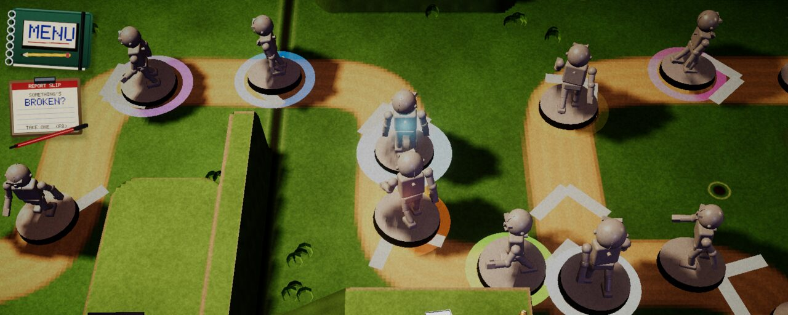
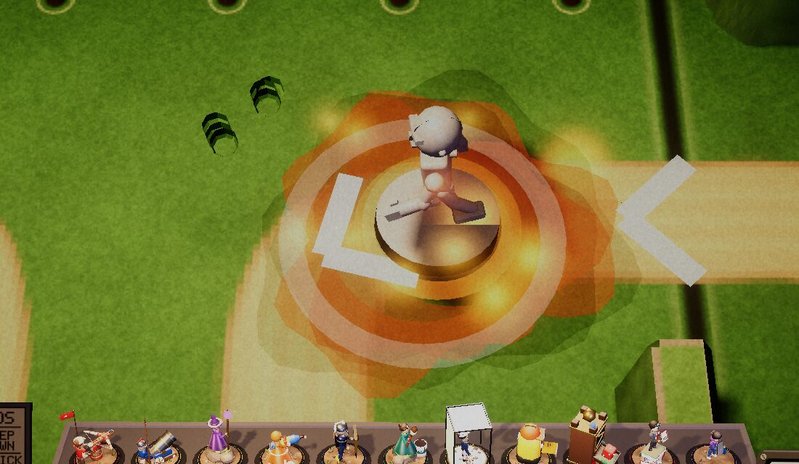
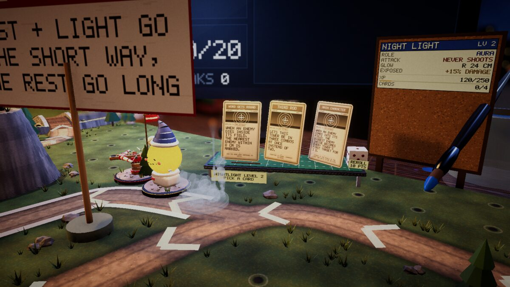
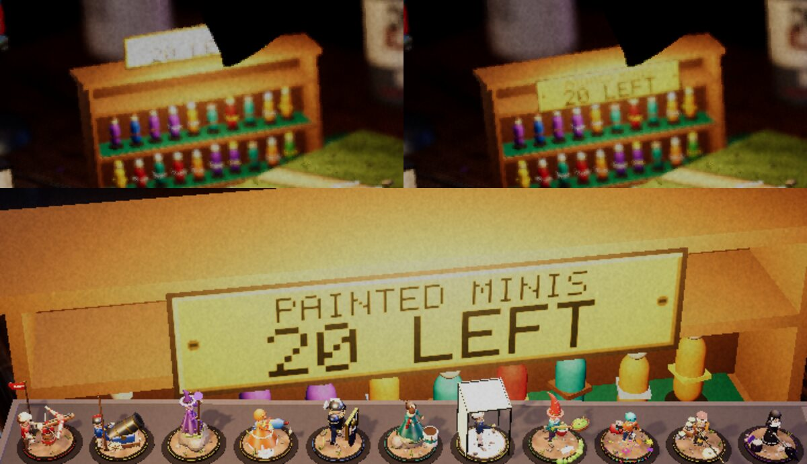

Devlog ·
A tester asked what the cards meant
A tester said cards named things the game never shows, and another that buff towers were offered attack cards. Agents audited all 156 cards and gave towers roles.
Two questions from a tester
Average Joe, the outside tester, said some cards name things the game never shows: a card that "sets fire to flammable decals" when nothing on the table burns. The worker on issue 709 audited all 156 cards. Of them, 45 named something with no look on the table and 22 used a word the game never shows, from "poison" to mines that are never laid. Each was rewritten, given a visual, or cut.
The new visuals were wrong at first. The first status rings were drawn as planned and could not be seen at normal camera distance, hidden under each dude's dark base rim; doubled in width and brightened, they showed. Frozen, glued and stagger all read as white, so stagger became lilac and frozen ice cyan. The burning patch came out as solid black discs. An aura ring built on the existing zone marker became a 6 cm wide yellow wash over half the board at a tower's 30 cm range, and was rebuilt as a fixed-width line that follows the ground.


His second note was that any tower could draw any card, so buff towers that never shoot were offered attack cards (issue 710). Every tower now has one of seven roles and every card a mask of roles that may draw it, with new cards for auras, buffers, traps, hazards and crowd control. The worker's first role check asked whether a lone tower with all slots full still got three cards. A lone Captain Lightbox did not, since buffer cards need a neighbour; the offer is now topped up with the role's cards that wait for company. A second new card was dropped on paper because the game's pull moves an enemy along its road, so tugging it toward a tower ahead would walk it forward. On the desk, a Pep Talk lightbox logged its neighbours at x1.40 fire rate half a second into a wave and x1.00 ten seconds later.

A follow-up (issue 723) covered cards that test an enemy's health, which is never drawn. The first shot showed the 33 percent enemy almost black, read as charred, and the 60 percent one barely different from clean. No single mark shows a percentage, so three cards were reworded.
Player reports fixed the same days included the boss health strip hiding behind the notebook (issue 705). It now hangs from two pins at top centre; a redraw only every 2.5 percent had left it saying 100 percent for a boss at 99. A shelf plaque reported as clipped was whole up close, and nudging the default view moved the cut, which showed that something stood in front: a paintbrush leaning out of the jar behind the shelf. The plaque is now brass screwed to the shelf's front.

What nobody has checked yet
- Cards that depend on a held tower (Cold Hands and Drop Hammer rings) while the hand really holds a tower.
- Aura, buffer, trap and hazard towers in real play: the bot never builds them, so most new role cards are proven only in the card simulator.
- The status visuals under each table's own lighting, and the Web build for all of this.